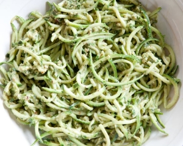

DAIRY FREE PESTO

DESCRIPTION
Pesto is one is one of my favorite sauces/condiments and can be used on anything from fresh veggies, to pasta, potatoes, and sandwiches!
I love this dairy-free, veggie filled version!
INGREDIENTS
- 4 cups fresh arugula
- 1/2 cup sunflower seeds
- 2 T lemon juice
- 1/2 cup nutritional yeast
- 1/2 cup olive oil
- 1 tsp salt
DIRECTIONS
- Chop arugula a bit and add to Vitamix or food processor
- Add all other ingredients to Vitamix
- Pulse until desired consistency